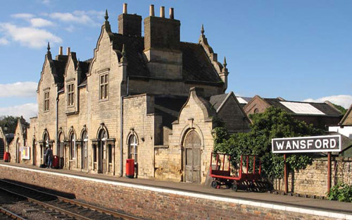
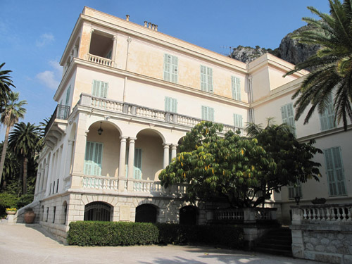

The Park Lane Hotel where Ruth Kettering's party is held. (Also seen in 'Elephants Can Remember').

Wansford Station and Nene Valley Railway used as the 'Railway Line'.

The Musée des Beaux-Arts - Palais Carnolès used as the 'Gare de Nice'.

The Villa Maria Serena in Menton used as 'Villa Marguerite' - Lady Tamplin's house. (Also seen in 'Three Act Tragedy').

Menton old town.

The Basilica Saint Michael where Rufus Van Aldin has Dolores shut away.